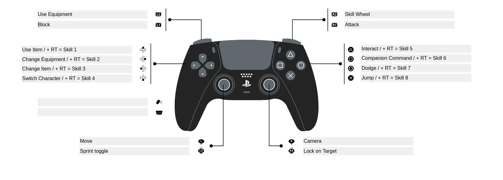

Description
Play as Irul and Oli, twin brothers who are travelling North West but they get trapped in a city in ruins. They must now find a way to get out.
The game is being imagined as a fast paced action adventure with a small open world with plenty of verticality. The combat will be fast paced and reactive, much like Sekiro.
Controls
Skills are activated by the D-Pad and action buttons while RT is held. Otherwise, the D-Pad and action buttons perform regular actions.
Gameplay
Block right when enemy attack lands to perform a parry.
If two attacks land at the same time, both characters get their attacks cancelled and both are disoriented for 2 seconds.
Press attack to perform a 4 attack combo. Hold to perform a charged attack. Attack after performing a dodge to perform a dodge followup attack. Attack after a parry to perform a parry follow up attack.
Hold jump to start flying. Jump in air to end flying. Attacks while in air consume magic energy. Charged attack consumes magic energy. As Irul, Jump while in air to perform a air jump. You can perform unlimited air jumps but this consumes magic energy.
Press start on controller or Esc or P on keyboard to open pause menu. Go to characters, press ability slots to select ability for the character. Only Irul has abilities right now. Oli's abilities will be included soon. Element Imbue abilities don't do much right now. We will implement that soon.
In Windows, it might take a few moments for the shaders to compile when the game is launched the first time. Equipment and items are not implemented fully. Pickups are working and items live in the character's inventory after picked up. The viewport on the pause menu might flicker. We will be fixing that soon.
Parry mechanics will be reworked soon. The disorienting status will not be applied as often. The game needs to be fast paced and the disorienting status is not conducive to that goal.